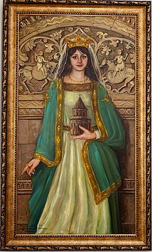
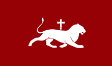

Կենսագրություն
Կատրանիդե թագուհին եղել է Սյունիքի թագավոր Վասակի (990-1040) միակ դուստրը[1][2], Սմբատ Սյունու թոռը։ Որոշ արևմտյան պատմիչների վկայությամբ՝ նա վրաց արքայադուստրն էր, ինչը փաստերով հերքվում է։ Գագիկ Ա շահնշահը և Կատրանիդե թագուհին ունեցել են 4 զավակ՝ Խուշուշ (ամուսնացել է Սենեքերիմ Արծրունու հետ և դարձել Վասպուրականի թագավորության վերջին թագուհին), Հովհաննես-Սմբատ (հայոց թագավոր, 1022-1040), Աշոտ (հայոց թագավոր, 1022-1039) և Աբաս։ Մահից հետո թագուհի Կատրանիդեին մեծ շուքով, եկեղեցական ծեսերով թաղեցին Անիի Կաթողիկե եկեղեցու հարևանությամբ գտնվող տապանատան գերեզմանոցում։ 20-րդ դարի սկզբին, երբ հնագետների խումբը արևելագետ Հովսեփ Օրբելու բացեց Կատրանիդեի գերեզմանը, և երևաց թագուհու կմախքը, նրանք տեսան, որ թագուհու ոտքերը խաչած էին ճիշտ այնպես, ինչպես Քրիստոսի ոտքերը խաչելիս։ Սա եղել է նրա վերջին ցանկությունը[3]։
Հայոց թագուհի 990-1020

Գործունեություն
Գագիկ Ա շահնշահի (990-1020) հոր՝ Աշոտ Ողորմած (953-977) շահնշահի օրոք՝ 961 թվականին, Անին դարձել էր Բագրատունյաց թագավորության մայրաքաղաքը։ Աշոտ թագավորը կառուցել էր պարիսպների մի գիծ, որին նրա ավագ որդի և հաջորդ Սմբատ Տիեզերակալը (977-990) ավելացրել էր երկրորդ գիծը։ Գագիկ շահնշահի օրոք շարունակվում է մայրաքաղաք Անիի կառուցապատումը՝ եկեղեցական կառույցներով։ Կատրանիդե թագուհու հովանավորությամբ՝ իր հայրական գանձարանի օժիտով ու թագավորական գանձարանի հաշվին կառուցվում է Անիի մայր տաճարը։ Առասպելը պատմում է, որ Կատրանիդե թագուհուն երազում հայտնված հրեշտակն է հուշել հովանավորել տաճարի կառուցումը[4]։ Նրա ճարտարապետն էր Տրդատը։ Եկեղեցու շինարարությունը տևել է 20 տարի և ավարտվել 1001 թվականին։ Այստեղ է տեղափոխվում կաթողիկոսական աթոռը՝ Սարգիս Ա Սևանցի (992-1019) կաթողիկոսի առաջնորդությամբ[5]։ Կատրանիդե թագուհին Անիի Մայր տաճարը զարդարել է «ծիրանեծաղիկ ոսկեղեն» գործվածքներով, արծաթե ու ոսկե անոթներով։ Տաճարի գմբեթին կանգնեցվել է մարդահասակ արծաթե խաչ, իսկ Սմբատ Տիեզերակալ թագավորը Հնդկաստանից բերել է տվել բյուրեղյա հսկա ջահ[6]։ Անիի ճարտարապետական կառույցները հայոց Գագիկ Առաջինի, Տրդատ ճարտարապետի և Կատրանիդե թագուհու մտահղացումների և ջանքերի շնորհիվ են կյանքի կոչվել։ Անին զարդարվեց ճարտարապետական հարուստ ձևավորումներով շինություններով, որոնց հիմնական մասը կազմում էին եկեղեցական կառույցները։ Կառուցվել են նաև իջևանատներ, ապարանքներ, այլ շինություններ։ Պատմիչների վկայությամբ քրիստոնեական հավատքին հավատարիմ թագուհին կատարում էր բոլոր ծեսերն ու աղոթքները, հաճախում մայրաքաղաքի եկեղեցիներ, աղոթում ու լսում հոգևոր երգեր։
Բագրատունիների դրոշ
